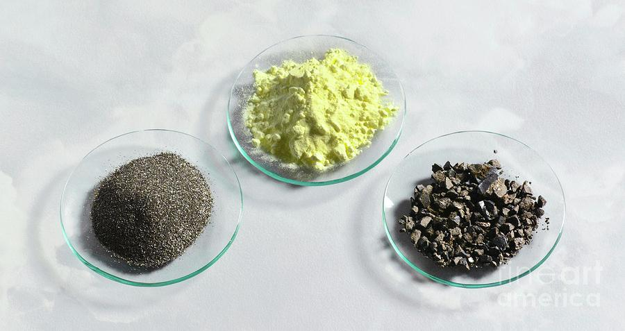
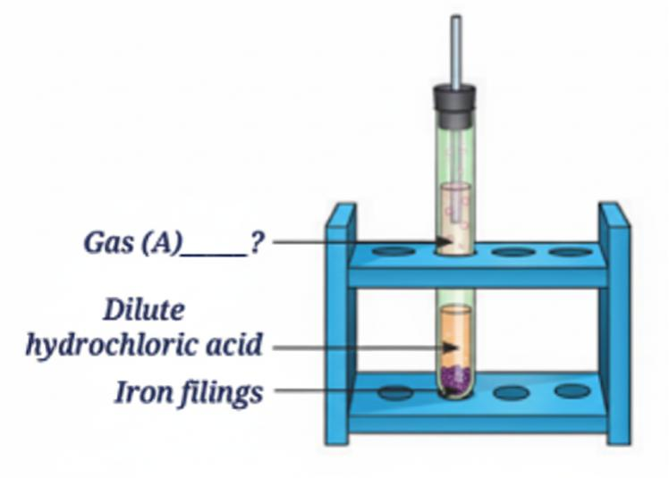
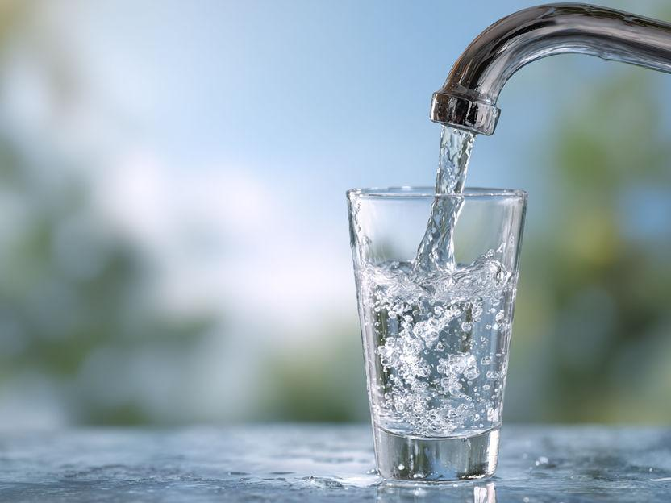
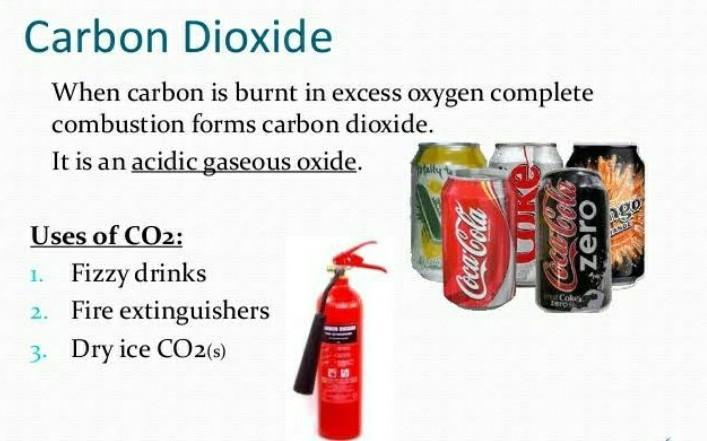

Class 8 Science
Class-8 Chapter 8: Nature of Matter- Element, Compound and Mixture
Textbook Exercise - Questions and Answers
Q1. Consider the following reaction where two substances, A and B, combine to form a product C:
A + B → C
Assume that A and B cannot be broken down into simpler substances by chemical reactions. Based on this information, which of the following statements is correct?
(i) A, B, and C are all compounds and only C has a fixed composition.
(ii) C is a compound, and A and B have a fixed composition.
(iii) A and B are compounds, and C has a fixed composition.
(iv) A and B are elements, C is a compound, and has a fixed composition.
Answer: Option (iv)
A and B are elements because they cannot be broken down into simpler substances by chemical reactions. When two elements combine chemically, they form a compound.
C is a compound and has a fixed composition.
Q2. Assertion: Air is a mixture.
Reason: A mixture is formed when two or more substances are mixed, without undergoing any chemical change.
(i) Both Assertion and Reason are true and Reason is the correct explanation for Assertion.
(ii) Both Assertion and Reason are true, but Reason is not the correct explanation for Assertion.
(iii) Assertion is true, but Reason is false.
(iv) Assertion is false, but Reason is true.
Answer: Option (i)
Both Assertion and Reason are true.
Air is a mixture of different gases, mainly nitrogen and oxygen. These gases are mixed physically and do not undergo a chemical change.
Q3. Water, a compound, has different properties compared to those of the elements oxygen and hydrogen from which it is formed. Justify this statement.
Answer:
Water is a compound made up of hydrogen and oxygen.
- Hydrogen is a combustible gas.
- Oxygen supports burning.
- Water is used to extinguish fire.
Thus, water has completely different properties from the elements hydrogen and oxygen.
Q4. In which of the following cases are all the examples correctly matched? Give reasons in support of your answers.
(i) Elements: Water, nitrogen, iron, air.
Answer: Incorrect. Water is a compound, air is a mixture, while nitrogen and iron are elements.
(ii) Uniform mixtures: Minerals, seawater, bronze, air.
Answer: Incorrect. Seawater, bronze and air are uniform mixtures. Minerals are generally naturally occurring substances with definite compositions.
(iii) Pure substances: Carbon dioxide, iron, oxygen, sugar.
Answer: Correct.
- Carbon dioxide - Compound
- Iron - Element
- Oxygen - Element
- Sugar - Compound
(iv) Non-uniform mixtures: Air, sand, brass, muddy water.
Answer: Incorrect. Air and brass are uniform mixtures, whereas sand and muddy water are generally non-uniform mixtures.
Final Answer: Only option (iii) is correctly matched.
Q5. Iron reacts with moist air to form iron oxide, and magnesium burns in oxygen to form magnesium oxide. Classify all the substances involved in the above reactions as elements, compounds or mixtures, with justification.
Answer:
Reaction 1: Formation of Iron Oxide
Iron + Oxygen + Water Vapour → Iron Oxide (Rust)
| Substance | Classification |
|---|---|
| Iron | Element |
| Moist Air | Mixture |
| Iron Oxide | Compound |
Reaction 2: Formation of Magnesium Oxide
Magnesium + Oxygen → Magnesium Oxide
| Substance | Classification |
|---|---|
| Magnesium | Element |
| Oxygen | Element |
| Magnesium Oxide | Compound |
Explanation: Elements contain one type of atom. Compounds are formed when elements combine chemically in a fixed ratio. Air is a mixture of gases.
Q6. Classify the following as elements, compounds, or mixtures in Table 8.3.
Carbon dioxide, sand, seawater, magnesium oxide, muddy water, aluminium, gold, oxygen, rust, iron sulfide, glucose, air, water, fruit juice, nitrogen, sodium chloride, sulfur, hydrogen, baking soda.
Answer:
| Elements | Compounds | Mixtures |
|---|---|---|
| Aluminium | Carbon dioxide | Sand |
| Gold | Magnesium oxide | Seawater |
| Oxygen | Rust | Muddy water |
| Nitrogen | Iron sulfide | Air |
| Sulfur | Glucose | Fruit juice |
| Hydrogen | Water | |
| Sodium chloride | ||
| Baking soda |
Pure Substances
Pure substances include all elements and compounds.
- Aluminium
- Gold
- Oxygen
- Nitrogen
- Sulfur
- Hydrogen
- Carbon dioxide
- Magnesium oxide
- Rust
- Iron sulfide
- Glucose
- Water
- Sodium chloride
- Baking soda
Q7. What new substance is formed when a mixture of iron filings and sulfur powder is heated, and how is it different from the original mixture? Also, write the word equation for the reaction.
Answer:
When a mixture of iron filings and sulfur powder is heated, a new substance called Iron Sulfide is formed.

Differences:
- Iron and sulfur can be separated using a magnet before heating.
- Iron sulfide cannot be separated using a magnet.
- Iron sulfide has different properties from iron and sulfur.
- Iron sulfide is a compound with a fixed composition.
Word Equation:
Iron + Sulfur → Iron Sulfide
Q8. Is it possible for a substance to be classified as both an element and a compound? Explain why or why not.
Answer:
No, a substance cannot be classified as both an element and a compound.
Reason:
- An element contains only one type of atom and cannot be broken down chemically into simpler substances.
- A compound contains two or more elements chemically combined in a fixed ratio.
Therefore, an element and a compound are two different types of pure substances.
Q9. How would our daily lives be changed if water were not a compound but a mixture of hydrogen and oxygen?
Answer:
If water were a mixture of hydrogen and oxygen instead of a compound:
- Hydrogen and oxygen would retain their individual properties.
- Hydrogen is combustible and oxygen supports burning.
- The mixture would not have the same properties as water.
- We would not have pure water with its fixed composition and properties.
Water is essential for drinking, cooking, washing and the survival of living organisms.
Q10. Analyse Fig. 8.24. Identify Gas A. Also, write the word equation of the chemical reaction.

Answer:
Gas A is Hydrogen Gas.
When iron filings react with dilute hydrochloric acid, hydrogen gas is released.
Word Equation:
Iron + Hydrochloric Acid → Iron Chloride + Hydrogen
Explanation:
- Iron reacts with dilute hydrochloric acid.
- Iron chloride is formed.
- Hydrogen gas is released as bubbles.
Q11. Write the names of any two compounds made only from non-metals, and also mention two uses of each of them.
Answer:
1. Water (H2O)
Water is made up of hydrogen and oxygen.

Uses:
- Used for drinking and cooking.
- Used for washing and cleaning.
2. Carbon Dioxide (CO2)
Carbon dioxide is made up of carbon and oxygen.

Uses:
- Used in fire extinguishers.
- Used in making carbonated drinks.
Q12. How can gold be classified as both a mineral and a metal?
Answer:
Gold can be classified as both a mineral and a metal because:
As a Mineral:
- Gold occurs naturally in the Earth's crust.
- It is found in rocks and underground deposits.
As a Metal:
- Gold is shiny and has a metallic lustre.
- It is a good conductor of electricity.
- It is malleable and can be shaped into thin sheets.
Therefore, gold is both a naturally occurring mineral and a metal.
Quick Revision - Important Concepts
| Term | Meaning / Example |
|---|---|
| Element | A pure substance made of one type of atom. |
| Compound | Two or more elements chemically combined. |
| Mixture | Two or more substances physically mixed. |
| Pure Substance | An element or a compound. |
| Uniform Mixture | A mixture having the same composition throughout, e.g. air. |
| Non-uniform Mixture | A mixture having different compositions in different parts, e.g. muddy water. |
| Chemical Reaction | A process in which new substances are formed. |
Learning Tip
Remember that elements and compounds are pure substances, whereas mixtures contain two or more substances physically mixed together.